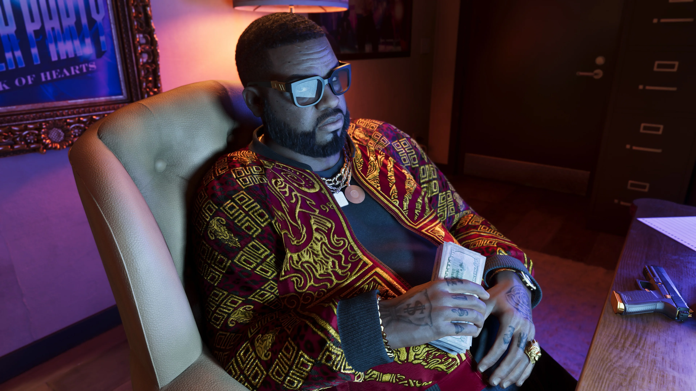
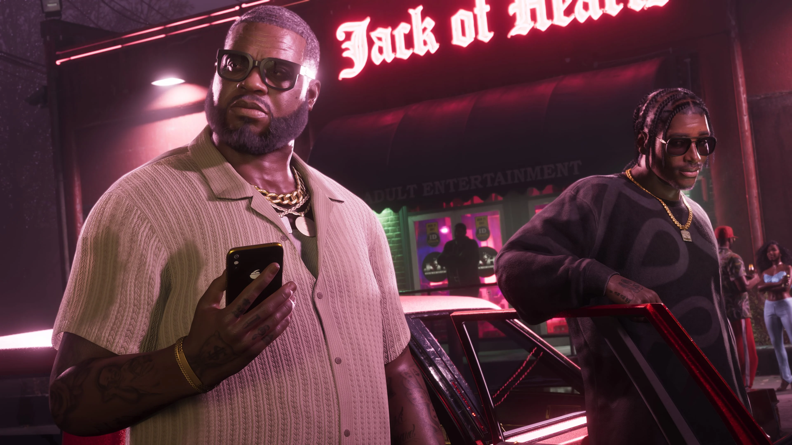
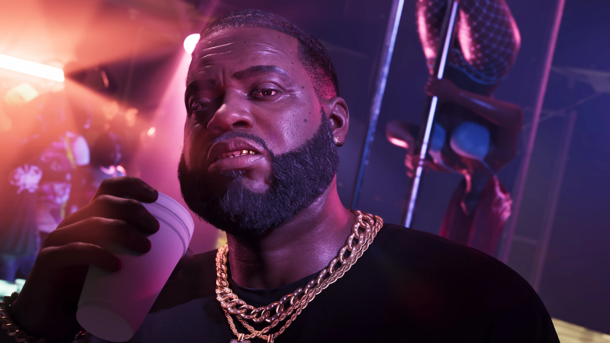

Dre'Quan Priest
Dre'Quan é parceiro de Boobie na Only Raw Records. A Rockstar descreve essa parceria como o projeto no qual Boobie está mais investido.
Conhecer Dre'Quan

Boobie Ike é uma lenda local de Vice City em Grand Theft Auto VI e transformou sua trajetória nas ruas em um império legítimo.
Seus negócios passam por imóveis, um strip club e um estúdio de gravação. Mesmo com diferentes empreendimentos, é na parceria com Dre'Quan Priest pela Only Raw Records que Boobie aparece especialmente investido.
Boobie é apresentado pela Rockstar como uma figura conhecida de Vice City — e alguém que age como tal.
Um dos pontos que mais chama atenção em sua apresentação é a capacidade de transformar a experiência das ruas em um império legítimo.
Esse império inclui imóveis, um strip club e um estúdio de gravação, colocando Boobie em diferentes partes da vida econômica e noturna da cidade.
A personalidade acompanha essa posição: Boobie aparece sorridente e descontraído, mas a própria Rockstar deixa claro que o tom muda quando chega a hora de falar de negócios.

O império de Boobie não depende de um único empreendimento. A apresentação oficial reúne imóveis, um strip club e um estúdio de gravação entre seus negócios legítimos.
O clube também se conecta ao núcleo musical do personagem. Dre'Quan Priest trabalhou agendando artistas para o local enquanto buscava espaço na indústria musical.
Essa relação entre vida noturna, estúdio e música ajuda a explicar por que a parceria com Dre'Quan ganhou tanto peso dentro dos planos de Boobie.
A Rockstar não detalhou, porém, nomes, valores, propriedades específicas ou a dimensão financeira desses negócios.
Entre os projetos apresentados para Boobie, a Rockstar destaca especialmente sua parceria com Dre'Quan Priest pela Only Raw Records.
Dre'Quan é apresentado como um jovem aspirante a magnata da música. Mesmo quando vendia nas ruas para se sustentar, entrar para a indústria musical continuava sendo seu objetivo.
A parceria coloca os dois diretamente no núcleo musical de Vice City, com a Only Raw Records servindo de ponto de encontro entre os planos de Boobie e a ambição de Dre'Quan.
Por enquanto, falta justamente aquilo que a própria Rockstar resume de forma direta: um grande sucesso capaz de impulsionar o projeto.

Personagens diretamente conectados ao núcleo de negócios e música apresentado para Boobie Ike.
Dre'Quan é parceiro de Boobie na Only Raw Records. A Rockstar descreve essa parceria como o projeto no qual Boobie está mais investido.
Conhecer Dre'QuanBae-Luxe e Roxy formam a Real Dimez. Dre'Quan contratou a dupla para a Only Raw Records, conectando-as ao mesmo núcleo musical.
Conhecer Real DimezOs quatro screenshots oficiais de Boobie Ike publicados na biblioteca de mídia da Rockstar Games.
Esta área reúne somente informações apresentadas oficialmente para o personagem.
Boobie é apresentado oficialmente como uma lenda local de Vice City.
Seu império legítimo inclui negócios no setor imobiliário.
Um strip club também faz parte dos empreendimentos de Boobie.
Boobie possui um estúdio de gravação entre seus negócios.
Sua parceria com Dre'Quan pela Only Raw Records é o projeto no qual Boobie aparece mais investido.
Boobie e Dre'Quan ainda buscam um grande sucesso para o projeto musical.
As informações e imagens desta página são baseadas em materiais oficiais publicados pela Rockstar Games.
Página oficial que apresenta Boobie Ike, seus negócios em Vice City e sua parceria com Dre'Quan Priest pela Only Raw Records.
Ver perfil oficialBiblioteca oficial de mídia da Rockstar Games, com quatro screenshots identificados como Boobie Ike.
Ver screenshots oficiais